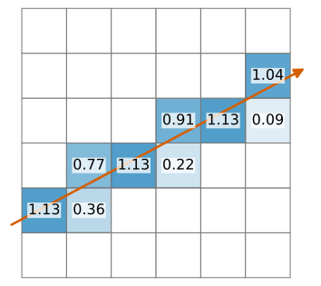
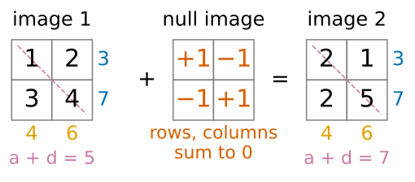
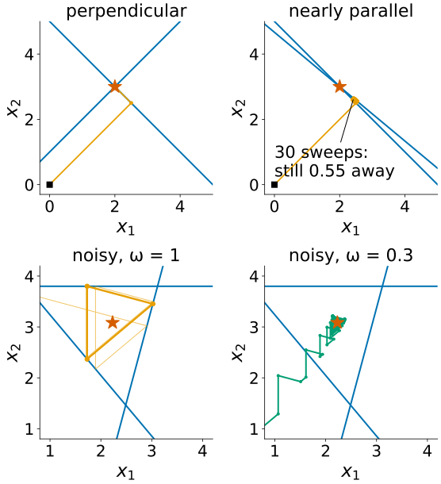
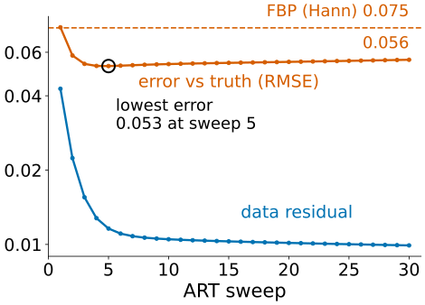
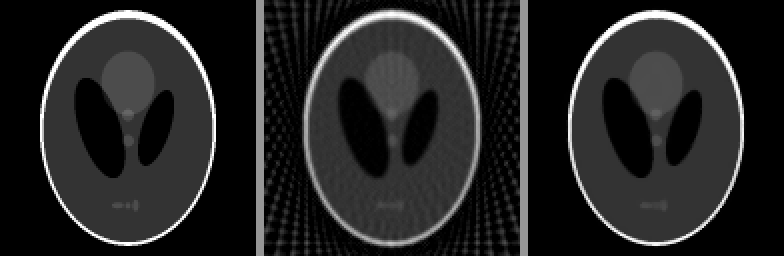

FBP is fast, but it needs many angles and many photons, and it cannot use anything we know about the object. Today tomography becomes linear algebra.
Unknown image \mathbf x, data \mathbf b, projector A: A\mathbf x = \mathbf b. Its null space = what the data cannot see.
A^\top is back-projection; there is no usable inverse, so we solve iteratively.
ART (Kaczmarz): fix one ray at a time. SIRT: fix all rays at once, averaged.
With noise: semi-convergence. With few views or a missing wedge: priors (non-negativity, total variation).
Slides titled The math give the formulas and proofs; the ideas are complete without them.
Tomography is A\mathbf x = \mathbf b
Put the pixel values in a vector \mathbf x. Each measurement is a weighted sum of the pixels on its ray: b_i = \sum_j a_{ij}x_j.
Row i of A says which pixels ray i passes and with which weight (the length inside the pixel, or the interpolation weights of the first unit).
A is huge: a 256 \times 256 image with 400 angles × 256 bins is a 102\,400 \times 65\,536 matrix, 6.7 billion entries.
But sparse: each ray touches only about 512 pixels, under 1 %. We never store A; we compute A\mathbf x by projecting and A^\top\mathbf y by back-projecting.

One ray (row i of A) through a 6 × 6 image. The number in each pixel is the length of the ray inside it: the nonzero entries of that row; all other pixels get 0.
Recall (image formation day): measuring is a linear forward operator, and inverting it amplifies noise wherever the operator loses information. Tomography is that story with A = the projector.
By hand: a 2 \times 2 image
Pixels \mathbf x = (a, b, c, d) (top row a, b). Measure row sums and column sums:
A = \begin{bmatrix}1&1&0&0\\0&0&1&1\\1&0&1&0\\0&1&0&1\end{bmatrix}, \qquad \begin{bmatrix}1&2\\3&4\end{bmatrix} \text{ and } \begin{bmatrix}2&1\\2&5\end{bmatrix} \text{ both give } \mathbf b = (3, 7, 4, 6).
A has rank 3, not 4. Their difference (1, -1, -1, 1) is in the null space: A(1, -1, -1, 1) = 0. Adding it to an image changes nothing the scanner sees.
One diagonal ray, a + d, tells them apart: 5 versus 7. Rank 4.
More angles = more rows = a smaller null space: the linear-algebra version of “too few angles”.

Adding the null image (1, −1; −1, 1) changes no row sum (blue) or column sum (orange); only the diagonal ray a + d tells the two images apart.
Try it: rays, matrix and null space
A^\top is back-projection
A^\top\mathbf y sends each measurement y_i back to the pixels of ray i with the same weights: exactly the back-projection of the second unit.
For the 2 \times 2 example: A^\top\mathbf b = (3 + 4,\ 3 + 6,\ 7 + 4,\ 7 + 6) = (7, 9, 11, 13). The right order, far too large, blurred towards the mean.
The inverse is not available: A is not square, has a null space, and the data are noisy (so A\mathbf x = \mathbf b may have no exact solution).
So: least squares, \min_{\mathbf x}\|A\mathbf x - \mathbf b\|^2, solved iteratively with only A\mathbf x and A^\top\mathbf y, never a matrix inverse.
ART: one ray at a time
Kaczmarz’s method, called ART (algebraic reconstruction technique) in tomography: take one ray; change the image as little as possible so that this ray’s sum is right, by spreading its error evenly over its pixels. Then the next ray. Sweep, repeat.
By hand, \mathbf b = (3, 7, 4, 6), from \mathbf x = 0, rays in the order row 1, row 2, column 1, column 2:
step
ray
error
\mathbf x = (a, b, c, d)
1
a + b = 3
3
(1.5, 1.5, 0, 0)
2
c + d = 7
7
(1.5, 1.5, 3.5, 3.5)
3
a + c = 4
−1
(1, 1.5, 3, 3.5)
4
b + d = 6
1
(1, 2, 3, 4)
One sweep returns \begin{psmallmatrix}1&2\\3&4\end{psmallmatrix}, even if the truth was \begin{psmallmatrix}2&1\\2&5\end{psmallmatrix}: the data cannot tell, and ART picks the smallest image (squared norm 30 against 34).
Two pixels: ART in a picture
With two unknown pixels (x_1, x_2), every measurement is a line in the plane; the true image is where the lines meet.
ART projects the current point onto one line, then the next: a zig-zag towards the intersection.
Nearly parallel lines (similar rays): tiny steps. x_1 + x_2 = 5 and x_1 + 1.2x_2 = 5.6 (5° apart): after 30 sweeps still 0.55 from the solution.
Noise: three lines do not meet in one point. ART circles forever between them; a relaxation\omega < 1 (step a fraction \omega of the way) shrinks the circle onto a point near the least-squares solution.

ART paths (from the black square) on the examples of the text, and on three inconsistent lines (the demo’s noisy preset): with ω = 1 the path ends in a triangle cycle, with ω = 0.3 it settles near the least-squares point (star).
Try it: ART and SIRT with two pixels
SIRT: all rays at once
SIRT (simultaneous iterative reconstruction technique): compute the error of every ray with the current image, back-project all errors at once (each spread evenly along its ray), average at each pixel, update.
From \mathbf x = 0 on the 2 \times 2 example: errors (3, 7, 4, 6), spread over 2 pixels each: (1.5, 3.5, 2, 3); each pixel averages its row and column values: (1.75, 2.25, 2.75, 3.25).
That is A^\top\mathbf b / 4: the first SIRT step from zero is (normalised) plain back-projection. The iterations then remove its blur step by step.
Smoother and more robust to noise than ART (the errors of all rays are averaged), but slower: many iterations instead of a few sweeps.
The math: Kaczmarz and SIRT
Kaczmarz/ART, ray i with row \mathbf a_i: \mathbf x \leftarrow \mathbf x + \omega\,\frac{b_i - \mathbf a_i^\top\mathbf x}{\|\mathbf a_i\|^2}\,\mathbf a_i \qquad (\omega = 1: \text{orthogonal projection onto } \mathbf a_i^\top\mathbf x = b_i). Every update is a multiple of some \mathbf a_i, so from \mathbf x_0 = 0 the iterate stays in the row space of A; on a consistent system it converges to the minimum-norm solution (the one orthogonal to the null space).
SIRT, with W_r and W_c the diagonal matrices of inverse row sums and inverse column sums of A: \mathbf x \leftarrow \mathbf x + \omega\,W_cA^\top W_r(\mathbf b - A\mathbf x). This is gradient descent on the weighted least-squares cost \tfrac12\|A\mathbf x - \mathbf b\|^2_{W_r} (preconditioned by W_c); with W_r = W_c = I it is Landweber iteration. Its fixed points solve the (weighted) normal equations A^\top W_r A\mathbf x = A^\top W_r\mathbf b; it converges for 0 < \omega < 2.
Semi-convergence: stop early
With noisy data the iteration first recovers the image, then starts fitting the noise:
the data residual\|A\mathbf x - \mathbf b\| keeps falling,
but the error against the truth falls, reaches a minimum, and rises again.
Demo (Shepp–Logan, 60 angles, 3000 photons per ray, ART with \omega = 0.5): lowest error 0.053 after 5 sweeps, 0.056 after 30, while the residual keeps falling. FBP (Hann): 0.075.

The demo’s “noisy: stop early” run: the error against the truth (red) has its minimum at sweep 5 and then creeps up, while the relative data residual (blue) keeps falling. Dashed: FBP.
Stopping early is a form of regularisation, as on the deconvolution day: the first iterations recover the strong, well-measured components, the later ones the weakly measured ones, which are mostly noise.
Priors: what we know that the data don’t say
Non-negativity: attenuation cannot be negative. Clip x_j < 0 to 0 after each step.
Total variation (TV): the object is mostly piecewise constant. TV adds up the gradient magnitudes, \mathrm{TV}(\mathbf x) = \sum_p \|\nabla x_p\|: it allows a few sharp edges but punishes noise and ripples (the Ising/MRF elective treats TV in 1D). Alternate a data step (ART or SIRT) with a TV-denoising step of weight \lambda.

Phantom; FBP (Hann) from 30 views; ART + non-negativity + TV from the same 30 views.
From 30 views the demo gives RMSE 0.081 for FBP, 0.028 for ART with non-negativity, 0.020 with TV (\lambda = 0.003). The price of TV: fine texture is lost and smooth ramps become staircases. Too large a \lambda gives a cartoon.
The math: regularised reconstruction
The same “data + λ · prior” form as segmentation energies (graph cuts) and the deconvolution day, now with A \ne I:
The smoothed TV is differentiable, so gradient steps work; the demo alternates a data step with an exact TV-denoising step instead (a splitting method).
For emission data (PET, SPECT) the counts are Poisson, and the data term becomes the Poisson log-likelihood. Its classic iteration is multiplicative, MLEM: \mathbf x \leftarrow \dfrac{\mathbf x}{A^\top\mathbf 1}\,A^\top\dfrac{\mathbf b}{A\mathbf x} (elementwise), which keeps \mathbf x \ge 0 automatically. It is Richardson–Lucy deconvolution (deconvolution day) with A = the projector.
Try it: iterative reconstruction with priors
Summary
Tomography is A\mathbf x = \mathbf b with a huge, sparse projector A; its null space holds the images the scan cannot see. More angles, more rows, smaller null space.
A^\top = back-projection; the inverse is not usable, so we solve least squares iteratively.
ART: project onto one ray’s equation at a time; fast, converges to the minimum-norm image; with noise it circles unless relaxed (\omega < 1).
SIRT: all rays at once, averaged; step 1 is back-projection; smoother, slower.
With noise the error semi-converges: stop early. With few views or a missing wedge, priors (non-negativity, TV) give clean images where FBP streaks, at the price of texture.